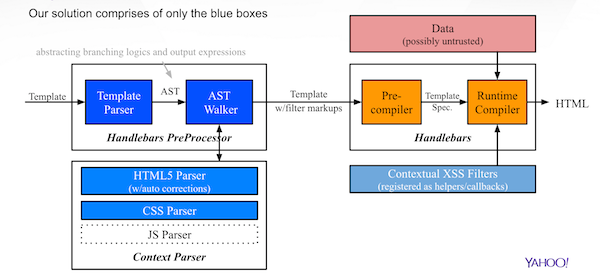

Secure Handlebars - the first template engine applied with our automatic contextual escaping solution
To demostrate our solution, we apply it to one of the most popular JavaScript Templating engines - Handlebars. The solution is hooked as a pre-processing process of the original Handlebars as shown below.
Figure 1 - Secure Handlebars
In particular, the solution works independently by:
By such a loosely-coupled design, the original data flow of Handlebars is kept intact. This enables Handlebars to perform compilation and data binding using the processed templates alone, without incurring any runtime overheads for template analysis.
Learn more about the core components: Context-Parser, XSS Filters
What is easier than adopting the solution with 2 lines of code changes? We know it's exactly what you want! Here's the express-secure-handlebars npm package, readily available for those using the Express framework.